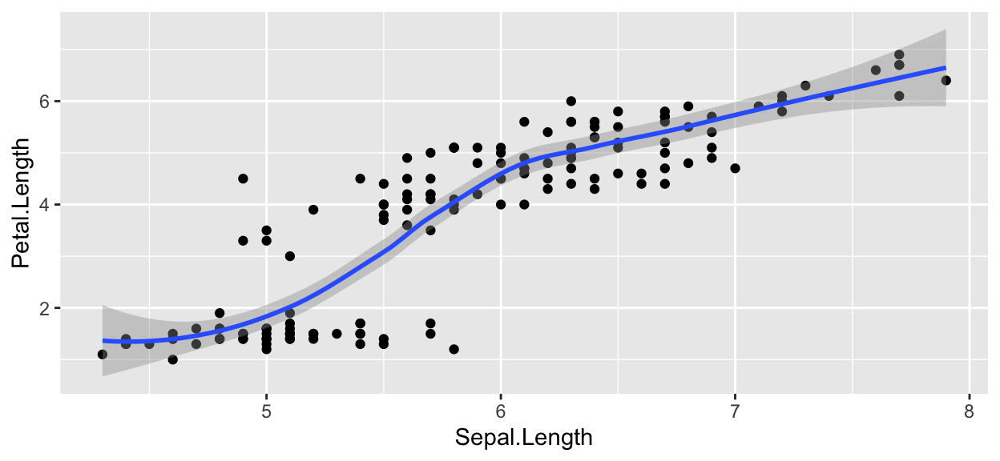

A quick reference for key elements used on this site; designed to help make the information more accessible and help you learn more effectively.
I would like to take a few moments to share some quick tips on how to use this site. Everything discussed here will be covered more extensively in future lessons. In this post I simply want to highlight some of the key elements I use on this site for (what I hope) is a more enjoyable learning experience.
First, the site is written in R Markdown and constructed using the Distill blog template—one of the template choices you have for your projects. Therefore, this site both hosts all of the lessons and itself is a teaching/learning tool.
Bookmark the Distill site. You will use it a lot. The site is also linked in the dropdown menu on the navigation bar under Resources.
Lessons will be posted in order on the homepage. Please work through these lessons before the course starts. Most lessons will be relatively short and include reading times at the top of each lesson so you know what you’re getting into. I recognize that there is a range of coding expertise and experience in our group. These lessons are written for the beginner, so for some of you this material may be rudimentary. But please do work through the lessons—you may learn something new or you will almost certainly find mistakes I have made.
Keep you eye out for asides and footnotes. Asides are little notes in the gutter of a page (immediately to the right of the article text) while footnotes usually contain more information and are linked in the Appendix like this1.
Within each lesson, I also will use a few different FontAwesome icons to highlight particular material, specifically:
I also use inline text formatting to highlight specific coding
elements like file types (e.g., R Markdown or .Rmd), R
packages (e.g., fontawesome), commands (e.g.,
ggplot), and so on.
One other tool I will use on occasion are panels or tab sets. This
allows me to display related information in a relatively small space.
For example, let’s say I wanted to show you several different options
for displaying tabular data using the kable function from
the knitr package.
| Sepal.Length | Sepal.Width | Petal.Length | Petal.Width | Species | |
|---|---|---|---|---|---|
| Min. :4.300 | Min. :2.000 | Min. :1.000 | Min. :0.100 | setosa :50 | |
| 1st Qu.:5.100 | 1st Qu.:2.800 | 1st Qu.:1.600 | 1st Qu.:0.300 | versicolor:50 | |
| Median :5.800 | Median :3.000 | Median :4.350 | Median :1.300 | virginica :50 | |
| Mean :5.843 | Mean :3.057 | Mean :3.758 | Mean :1.199 | NA | |
| 3rd Qu.:6.400 | 3rd Qu.:3.300 | 3rd Qu.:5.100 | 3rd Qu.:1.800 | NA | |
| Max. :7.900 | Max. :4.400 | Max. :6.900 | Max. :2.500 | NA |
data(iris)
knitr::kable(summary(iris)) %>%
kableExtra::kable_styling()
| Sepal.Length | Sepal.Width | Petal.Length | Petal.Width | Species | |
|---|---|---|---|---|---|
| Min. :4.300 | Min. :2.000 | Min. :1.000 | Min. :0.100 | setosa :50 | |
| 1st Qu.:5.100 | 1st Qu.:2.800 | 1st Qu.:1.600 | 1st Qu.:0.300 | versicolor:50 | |
| Median :5.800 | Median :3.000 | Median :4.350 | Median :1.300 | virginica :50 | |
| Mean :5.843 | Mean :3.057 | Mean :3.758 | Mean :1.199 | NA | |
| 3rd Qu.:6.400 | 3rd Qu.:3.300 | 3rd Qu.:5.100 | 3rd Qu.:1.800 | NA | |
| Max. :7.900 | Max. :4.400 | Max. :6.900 | Max. :2.500 | NA |
data(iris)
knitr::kable(summary(iris)) %>%
kableExtra::kable_paper("hover", full_width = TRUE)
| Sepal.Length | Sepal.Width | Petal.Length | Petal.Width | Species | |
|---|---|---|---|---|---|
| Min. :4.300 | Min. :2.000 | Min. :1.000 | Min. :0.100 | setosa :50 | |
| 1st Qu.:5.100 | 1st Qu.:2.800 | 1st Qu.:1.600 | 1st Qu.:0.300 | versicolor:50 | |
| Median :5.800 | Median :3.000 | Median :4.350 | Median :1.300 | virginica :50 | |
| Mean :5.843 | Mean :3.057 | Mean :3.758 | Mean :1.199 | NA | |
| 3rd Qu.:6.400 | 3rd Qu.:3.300 | 3rd Qu.:5.100 | 3rd Qu.:1.800 | NA | |
| Max. :7.900 | Max. :4.400 | Max. :6.900 | Max. :2.500 | NA |
data(iris)
knitr::kable(summary(iris)) %>%
kableExtra::kable_minimal("hover", full_width = TRUE)
| Sepal.Length | Sepal.Width | Petal.Length | Petal.Width | Species | |
|---|---|---|---|---|---|
| Min. :4.300 | Min. :2.000 | Min. :1.000 | Min. :0.100 | setosa :50 | |
| 1st Qu.:5.100 | 1st Qu.:2.800 | 1st Qu.:1.600 | 1st Qu.:0.300 | versicolor:50 | |
| Median :5.800 | Median :3.000 | Median :4.350 | Median :1.300 | virginica :50 | |
| Mean :5.843 | Mean :3.057 | Mean :3.758 | Mean :1.199 | NA | |
| 3rd Qu.:6.400 | 3rd Qu.:3.300 | 3rd Qu.:5.100 | 3rd Qu.:1.800 | NA | |
| Max. :7.900 | Max. :4.400 | Max. :6.900 | Max. :2.500 | NA |
Let’s talk about code for a minute. Remember, a R Markdown document is Markdown text plus (R) code. As you will learn, R is not the only type code you can run in a R Markdown document. You can also use Python and Bash. We will go through the details of all of this in a future lesson, but for now I want to give you a few visual cues of how code is shown on this site. Code—be it R, Python, or Bash—is written and displayed in what are called code chunks. Here are examples of the way code chunks are rendered on this site for R, Python, and Bash (basically the left boarder color is different).
Each of these commands do the same thing—they tell you what directory you are currently in.
## R code chunks look like this
getwd()
[1] "/Users/rad/Dropbox (Smithsonian)/GITHUB_PROJECTS/STRI-MCGILL-NEO/2022/_posts/2022-04-04-using-this-site"## Python code chunks look like this
import os
os.getcwd()'/Users/rad/Dropbox (Smithsonian)/GITHUB_PROJECTS/STRI-MCGILL-NEO/2022/_posts/2022-04-04-using-this-site'## Bash code chunks look like this
pwd/Users/rad/Dropbox (Smithsonian)/GITHUB_PROJECTS/STRI-MCGILL-NEO/2022/_posts/2022-04-04-using-this-siteHow about a little example of R code execution. I load the library
ggplot2, and run the command qplot on the demo
data set called iris.
library(ggplot2)
# This is a comment.
# Anything following the # is not interpreted as code.
data(iris)
qplot(Sepal.Length, Petal.Length, data = iris) + geom_smooth()
If you hover over this code box you should see a button like this . If you click on that button, you can copy the code and paste it into your document.
And here is the output for running the qplot command on
the iris data set.

There are several options for displaying code in your document. This goes for any language you use.
reactable. The code for this table is
super long and really not important for the analysis, so I hide it in
the final HTML file. Here you only see the table and
not the code that generated it.reactable, you may not want to hide the code.
So you display the code chunk like so.iris2 <- dplyr::relocate(iris, "Species", .before = "Sepal.Length")
iris2$Species <- gsub('^', 'Iris ', iris2$Species)
border_style <- list(borderRight = "5px solid #eee")
header_style <- list(borderRight = "5px solid #eee", fontSize = "0.9em")
header_style_grp <- list(borderRight = "5px solid #eee", fontSize = "1em")
reactable(iris2,
defaultColDef = colDef(headerStyle = list(fontSize = "0.9em"),
header = function(value) gsub("_", " ", value, fixed = TRUE),
cell = function(value) format(value, nsmall = 0),
align = "center", filterable = FALSE, sortable = TRUE, resizable = TRUE
),
columns = list(
Species = colDef(name = "Species", sticky = "left", style = border_style,
headerStyle = header_style, align = "left",
minWidth = 100, filterable = TRUE),
`Sepal.Length` = colDef(name = "Length"),
`Sepal.Width` = colDef(name = "Width", style = border_style,
headerStyle = header_style),
`Petal.Length` = colDef(name = "Length"),
`Petal.Width` = colDef(name = "Width")
),
columnGroups = list(
colGroup(name = "Sepal", sticky = "left",
columns = c("Sepal.Length", "Sepal.Width"),
headerStyle = header_style_grp),
colGroup(name = "Petal", align = "center",
columns = c("Petal.Length", "Petal.Width"))
),
searchable = TRUE, defaultPageSize = 5,
pageSizeOptions = c(5, 10, nrow(iris2)),
showPageSizeOptions = TRUE, highlight = TRUE,
bordered = TRUE, striped = TRUE, compact = FALSE,
wrap = FALSE, showSortable = TRUE, fullWidth = TRUE,
theme = reactableTheme(style = list(fontSize = "0.8em")))
code_folding
chunk option.iris2 <- dplyr::relocate(iris, "Species", .before = "Sepal.Length")
iris2$Species <- gsub('^', 'Iris ', iris2$Species)
border_style <- list(borderRight = "5px solid #eee")
header_style <- list(borderRight = "5px solid #eee", fontSize = "0.9em")
header_style_grp <- list(borderRight = "5px solid #eee", fontSize = "1em")
reactable(iris2,
defaultColDef = colDef(headerStyle = list(fontSize = "0.9em"),
header = function(value) gsub("_", " ", value, fixed = TRUE),
cell = function(value) format(value, nsmall = 0),
align = "center", filterable = FALSE, sortable = TRUE, resizable = TRUE
),
columns = list(
Species = colDef(name = "Species", sticky = "left", style = border_style,
headerStyle = header_style, align = "left",
minWidth = 100, filterable = TRUE),
`Sepal.Length` = colDef(name = "Length"),
`Sepal.Width` = colDef(name = "Width", style = border_style, headerStyle = header_style),
`Petal.Length` = colDef(name = "Length"),
`Petal.Width` = colDef(name = "Width")
),
columnGroups = list(
colGroup(name = "Sepal", sticky = "left",
columns = c("Sepal.Length", "Sepal.Width"),
headerStyle = header_style_grp),
colGroup(name = "Petal", align = "center",
columns = c("Petal.Length", "Petal.Width"))
),
searchable = TRUE, defaultPageSize = 5,
pageSizeOptions = c(5, 10, nrow(iris2)),
showPageSizeOptions = TRUE, highlight = TRUE,
bordered = TRUE, striped = TRUE, compact = FALSE,
wrap = FALSE, showSortable = TRUE, fullWidth = TRUE,
theme = reactableTheme(style = list(fontSize = "0.8em")))
In our lessons, I will rarely hide code chunks
completely. I will however use code_folding a lot so keep
your
out for this drop down.
If you see something on this site that you like but cannot figure out how to code it, you have a few of options.
If the code is displayed (as above), you can simply hover over the code box and hit the copy code button .
You can also look the source code for each individual page, which
can be accessed from the page’s appendix under Source Code. This will also take
you to the course GitHub repo but this time straight to the page you are
interested in.
Another option is to access the source code for the entire project by clicking on the GitHub icon in the right corner of the navigation bar. This will take you to the GitHub repo for the course where you can download the full site. In fact, any web product I create has a link somewhere to the source code. Just look for GitHub icon .
Again, we will go through the details of everything in due course. I just wanted to give you a brief introduction to some of the important pieces of this puzzle.
The source code for this page can be accessed on GitHub by clicking this link.
This is a footnote.↩︎
To add icons to your project install
the fontawesome R package and use the function
fa within inline R code. We will cover inline code in a
future lesson.↩︎
To show code you set the code chunk
option echo=TRUE. To hide code you set
echo=FALSE↩︎
That said, the source code is still
available in the .Rmd file. See below for instructions on
accessing the source code↩︎
Text and figures are licensed under Creative Commons Attribution CC BY-SA 4.0. The figures that have been reused from other sources don't fall under this license and can be recognized by a note in their caption: "Figure from ...".